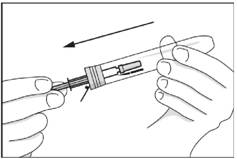
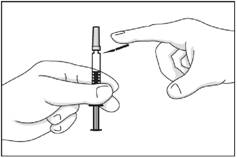
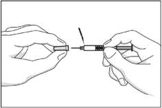
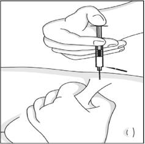
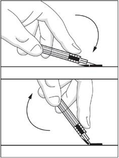

RÉSUMÉ DES CARACTÉRISTIQUES DU PRODUIT
ANSM - Mis à jour le : 19/06/2013
INNOHEP 18 000 U.I. anti-Xa/0,9 ml, solution injectable en seringue préremplie
2. COMPOSITION QUALITATIVE ET QUANTITATIVE
Tinzaparine sodique ............................................................................ 18 000 UI anti-Xa par 0,9 ml de solution
correspondant à une concentration de 20 000 UI anti-Xa par ml de solution
Pour la liste complète des excipients, voir rubrique 6.1.
Solution pour solution injectable.
4.1. Indications thérapeutiques
Cette héparine est une héparine de bas poids moléculaire (HBPM).
Ses indications sont les suivantes :
· Traitement curatif des thromboses veineuses profondes constituées;
· Traitement curatif des embolies pulmonaires sans signes de gravité, en l'absence de pathologie cardiopulmonaire pré-existante et à l'exclusion de celles susceptibles de relever d'un traitement thrombolytique ou chirurgical.
Lorsque des signes d'instabilité hémodynamique sont présents, l'héparine non fractionnée et éventuellement la thrombolyse ou l'embolectomie chirurgicale doivent être préférées. Ce traitement n'est pas indiqué chez les patients ayant subi une intervention chirurgicale récente.
· Traitement prolongé de la maladie thromboembolique veineuse symptomatique et prévention de ses récidives, chez les patients atteints d’un cancer en évolution et/ou en cours de chimiothérapie.
4.2. Posologie et mode d'administration
VOIE SOUS-CUTANEE (en dehors de l'indication en hémodialyse).
Cette présentation est adaptée à l'adulte.
Ne pas injecter par voie I.M.
1 ml de solution injectable correspond à environ 20 000 UI anti-Xa de tinzaparine.
Technique de l'injection sous-cutanée :
L'injection sous-cutanée de la tinzaparine doit être réalisée de préférence chez le patient en décubitus, dans le tissu cellulaire sous-cutané de la ceinture abdominale antérolatérale et postérolatérale, alternativement du côté droit et du côté gauche. L'aiguille doit être introduite perpendiculairement, et non tangentiellement, sur toute sa longueur, dans l'épaisseur d'un pli cutané réalisé entre le pouce et l'index de l'opérateur. Ce pli cutané doit être maintenu pendant toute la durée de l'injection.
Recommandation générale
La surveillance régulière de la numération plaquettaire est impérative pendant toute la durée du traitement en raison du risque de thrombopénie induite par l'héparine (TIH) (voir rubrique 4.4).
Traitement curatif des TVP et de l'embolie pulmonaire non grave
Toute suspicion de thrombose veineuse profonde doit être confirmée rapidement par des examens adaptés.
Fréquence d'administration :
1 injection par jour.
Dose administrée :
La dose par injection est de 175 UI anti-Xa/kg.
La posologie des HBPM n'a pas été évaluée en fonction du poids corporel chez les patients d'un poids supérieur à 100 kg ou inférieur à 40 kg. Il peut apparaître chez ces patients une moindre efficacité des HBPM pour les patients de plus de 100 kg ou un risque hémorragique accru pour les patients de poids inférieur à 40 kg. Une surveillance clinique particulière s'impose.
A titre d'exemple, et en fonction du poids du patient, les posologies à administrer sont les suivantes:
|
Poids corporel |
Volume d'INNOHEP par injection (1 par jour) 1 ml de solution = 20 000 UI anti-Xa |
|
45 kg |
0,4 ml = 8 000 UI anti-Xa |
|
55 kg |
0,5 ml = 10 000 UI anti-Xa |
|
70 kg |
0,6 ml = 12 000 UI anti-Xa |
|
80 kg |
0,7 ml = 14 000 UI anti-Xa |
|
90 kg |
0,8 ml = 16 000 UI anti-Xa |
|
≥ 100 kg |
0,9 ml = 18 000 UI anti-Xa |
Durée de traitement des TVP :
Le traitement par HBPM doit être relayé rapidement par les anticoagulants oraux, sauf contre-indications. La durée du traitement ne doit pas excéder 10 jours, délai d'équilibration par les AVK inclus, sauf en cas de difficultés d'équilibration (voir rubrique 4.4). Le traitement anticoagulant oral doit donc être débuté le plus tôt possible.
Durée de traitement dans l'embolie pulmonaire non grave :
La durée moyenne de traitement est de 7 jours.
Traitement prolongé de la maladie thromboembolique veineuse symptomatique et prévention de ses récidives chez les patients atteints d’un cancer en évolution et/ou en cours de chimiothérapie
Le traitement sera administré à la posologie curative habituelle de 175 UI anti-Xa/kg une fois par jour par voie sous-cutanée.
La durée de traitement recommandée est de 3 à 6 mois. Si le traitement anticoagulant doit être prolongé au-delà de 6 mois, le relais par les AVK doit être envisagé étant donnée l’absence de données sur l’utilisation de la tinzaparine au-delà de cette période.
Ce médicament NE DOIT PAS ETRE UTILISE dans les situations suivantes:
· hypersensibilité à la tinzaparine,
· antécédents de thrombopénie induite par l'héparine (ou TIH) grave de type II sous héparine non fractionnée ou sous héparine de bas poids moléculaire (voir rubrique 4.4),
· manifestations ou tendances hémorragiques liées à des troubles de l'hémostase (les coagulations intravasculaires disséminées peuvent être une exception à cette règle, lorsqu'elles ne sont pas liées à un traitement par l'héparine - voir rubrique 4.4),
· lésion organique susceptible de saigner,
· hémorragie intracérébrale,
· en l'absence de données, insuffisance rénale sévère (définie par une clairance de la créatinine de l'ordre de 30 ml/min selon l'estimation de la formule de Cockroft), en dehors de l'indication au cours de l'hémodialyse. Dans l'insuffisance rénale sévère, utiliser l'héparine non fractionnée.
Pour le calcul de la formule de Cockroft, il est nécessaire de disposer d'un poids récent du patient, voir rubrique 4.4-paragraphe Précautions d'emploi,
· de plus, une anesthésie péridurale, ou une rachianesthésie ne doivent jamais être effectuée lors d'un traitement curatif par HBPM.
Ce médicament est GENERALEMENT DECONSEILLE dans les cas suivants:
· accident vasculaire cérébral ischémique à la phase aiguë, avec ou sans troubles de la conscience. Lorsque l'accident vasculaire cérébral est d'origine embolique, le délai à respecter est de 72 heures. La preuve de l'efficacité des HBPM à dose curative n'a cependant pas été établie à ce jour, quelles que soient la cause, l'étendue et la sévérité clinique de l'infarctus cérébral,
· endocardite infectieuse aiguë (en dehors de certaines cardiopathies emboligènes),
· insuffisance rénale légère à modérée (clairance de la créatinine >30 et <60 ml/min).
De plus, ce médicament est GENERALEMENT DECONSEILLE en association avec (cvoir rubrique 4.5):
· l'acide acétylsalicylique aux doses antalgiques, anti-pyrétiques et anti-inflammatoires,
· les AINS (voie générale),
· le dextran 40 (voie parentérale).
4.4. Mises en garde spéciales et précautions d'emploi
Bien que les différentes spécialités d'héparines de bas poids moléculaire aient toutes des concentrations exprimées en unités internationales anti-Xa, leur efficacité ne se limite pas qu'à cette activité anti-Xa. Il serait dangereux de substituer le schéma posologique d'une HBPM par celui d'une autre HBPM ou par celui d'un autre polysaccharide de synthèse, chaque schéma ayant été validé par des études cliniques spécifiques. Il y a donc lieu d'être particulièrement vigilant et de respecter le mode d'emploi spécifique de chacune des spécialités.
Mises en garde spéciales
INNOHEP 10.000 UI antiXa/0.5 ml, 14.000 UI antiXa/0.7 ml et 18.000 UI antiXa/0.9 ml et 40.000/2 ml sont réservées au traitement curatif des TVP et de l'embolie pulmonaire et s'administrent en une seule injection quotidienne.
Risque hémorragique
Il est impératif de respecter les schémas thérapeutiques recommandés (posologies et durées de traitement). Dans le cas contraire, des accidents hémorragiques peuvent s'observer, surtout chez les sujets à risque (sujets âgés, insuffisants rénaux…).
Les accidents hémorragiques graves ont notamment été observés:
§ chez le sujet âgé, notamment du fait de la détérioration de la fonction rénale liée à l'âge,
§ en cas d'insuffisance rénale,
§ en cas de poids inférieur à 40 Kg,
§ en cas de traitement prolongé au-delà de la durée moyenne préconisée de 10 jours,
§ en cas de non-respect des modalités thérapeutiques conseillées (notamment durées de traitement et adaptation de la dose en fonction du poids pour les traitements curatifs),
§ en cas d'association à des médicaments majorant le risque hémorragique (voir rubrique 4.5).
Dans tous les cas, une surveillance particulière est indispensable chez les patients âgés et/ou insuffisants rénaux, ainsi qu'en cas de traitement prolongé au-delà de 10 jours.
Pour détecter une accumulation, une mesure de l'activité anti-Xa peut-être utile dans certains cas (voir Précautions d'emploi/Surveillance biologique).
Risque de thrombopénie induite par l'héparine (TIH)
Devant un patient traité par HBPM (à dose curative ou préventive) qui présente un événement thrombotique, tel que :
§ une aggravation de la thrombose pour laquelle il est traité,
§ une phlébite,
§ une embolie pulmonaire,
§ une ischémie aiguë des membres inférieurs,
§ voire un infarctus du myocarde ou un accident vasculaire cérébral ischémique, il faut systématiquement penser à une thrombopénie induite par l'héparine (TIH) et faire pratiquer en urgence une numération des plaquettes (voir rubrique 4.4).
Utilisation chez l'enfant
En l'absence de données, l'utilisation des HBPM chez l'enfant n'est pas recommandée.
Précautions d'emploi
Fonction rénale
Avant d'instaurer un traitement par HBPM, il est indispensable d'évaluer la fonction rénale, et plus particulièrement chez le sujet âgé à partir de 75 ans, en calculant la clairance de la créatinine (Clcr) à l'aide de la formule de Cockroft, en disposant d'un poids récent du patient:
Chez l'homme, Clcr = (140-âge) x poids / (0,814 x créatininémie) avec l'âge exprimé en années, le poids en kg, la créatininémie en µmol/l.
Cette formule doit être corrigée pour les femmes en multipliant le résultat par 0,85.
Lorsque la créatine est exprimée en mg/ml, multiplier par un facteur 8,8.
La mise en évidence d'une insuffisance rénale sévère (Clcr de l'ordre de 30 ml/min) contre-indique la prescription d'HBPM dans les indications curatives (voir rubrique 4.3).
Surveillance biologique
Surveillance plaquettaire des patients sous HBPM et risque de Thrombopénie Induite par l'Héparine (ou TIH de type II)
§ Les HBPM peuvent induire des TIH de type II, thrombopénies graves d'origine immunologique, responsables d'accidents thromboemboliques artériels ou veineux pouvant menacer le pronostic vital ou fonctionnel des patients (voir aussi rubrique 4.8). Afin de pouvoir détecter les TIH de manière optimale, il est nécessaire de surveiller les patients de la manière suivante:
o Dans un contexte chirurgical ou traumatique récent (dans les 3 mois):
Une surveillance biologique systématique est nécessaire, que l'indication du traitement soit préventive ou curative, chez tous les patients, compte tenu de l'incidence des TIH > 0.1 %, voire >1 %, en chirurgie et en traumatologie. Elle consiste à pratiquer une numération plaquettaire:
· avant le traitement par HBPM ou au plus tard dans les 24 heures après l'instauration du traitement,
· puis 2 fois par semaine pendant un mois (période de risque maximal),
· puis une fois par semaine jusqu'à l'arrêt du traitement en cas de traitement prolongé.
o En dehors d'un contexte chirurgical ou traumatique récent (dans les 3 mois):
Une surveillance biologique systématique est nécessaire que l'indication du traitement soit préventive ou curative, selon les mêmes modalités qu'en chirurgie et en traumatologie (voir paragraphe ci-dessus) chez les patients:
· ayant des antécédents d'exposition à l'HNF ou aux HBPM dans les 6 derniers mois, compte tenu de l'incidence des TIH > 0.1 %, voire >1 %,
· atteints de comorbidités importantes, notamment la maladie cancéreuse, compte tenu de la gravité potentielle des TIH chez ces patients.
Dans les autres cas, compte tenu de l'incidence des TIH plus faible (< 0.1 %), la surveillance de la numération plaquettaire peut être réduite à:
· une seule numération plaquettaire en début de traitement ou au plus tard dans les 24 heures après l'instauration du traitement,
· une numération plaquettaire en cas de manifestation clinique évocatrice de TIH (tout nouvel épisode thromboembolique artériel et/ou veineux, toute lésion cutanée douloureuse au site d'injection, toute manifestation allergique ou anaphylactoïde sous traitement). Le patient doit être informé de la possibilité de survenue de ces manifestations et de la nécessité de prévenir son médecin référent le cas échéant.
§ Une TIH doit être suspectée devant un nombre de plaquettes < 150.000/mm3 (ou 150 Giga/L) et/ou une chute relative des plaquettes de l'ordre de 50 %, voire 30 %, par rapport à la numération plaquettaire avant tout traitement. Elle apparaît essentiellement entre le 5ème et le 21ème jour suivant l'instauration du traitement héparinique (avec un pic de fréquence aux environs du 10ème jour). Mais elle peut survenir beaucoup plus précocement, lorsque des antécédents de thrombopénie sous héparine existent, et des cas isolés ont été rapportés au delà de 21 jours. De tels antécédents seront donc systématiquement recherchés au cours d'un interrogatoire approfondi avant le début du traitement. Dans tous les cas, l'apparition d'une TIH constitue une situation d'urgence et nécessite un avis spécialisé. Toute baisse significative (30 à 50 % de la valeur initiale) de la numération plaquettaire doit donner l'alerte, avant même que cette valeur n'atteigne un seuil critique. La constatation d'une diminution du nombre de plaquettes impose dans tous les cas :
1 - un contrôle immédiat de la numération ;
2 - la suspension du traitement héparinique, si la baisse est confirmée, voire accentuée, lors de ce contrôle, en l'absence d'une autre étiologie évidente.
Un prélèvement doit être réalisé sur tube citraté pour réaliser des tests d'agrégation plaquettaire in vitro et des tests immunologiques. Mais, dans ces conditions, la conduite à tenir immédiate ne repose pas sur le résultat de ces tests d'agrégation plaquettaire in vitro ou immunologiques, car seuls quelques laboratoires spécialisés les pratiquent en routine et le résultat n'est obtenu, dans le meilleur des cas, qu'au bout de plusieurs heures. Ces tests doivent cependant être réalisés pour aider au diagnostic de cette complication, car en cas de poursuite du traitement héparinique, le risque de thrombose est majeur.
3 - la prévention ou le traitement des complications thrombotiques de la TIH. Si la poursuite de l'anticoagulation semble indispensable, l'héparine doit être relayée par une autre classe d'antithrombotiques: danaparoïde sodique ou lepirudine, prescrits suivant les cas à dose préventive ou curative.
Le relais par les AVK ne sera pris qu'après normalisation de la numération plaquettaire, en raison du risque d'aggravation du phénomène thrombotique par les AVK.
Relais de l'héparine par les AVK
§ Renforcer alors la surveillance clinique et biologique (temps de Quick exprimé en INR) pour contrôler l'effet des AVK.
§ En raison du temps de latence précédant le plein effet de l'antivitamine K utilisé, l'héparine doit être maintenue à dose équivalente pendant toute la durée nécessaire pour que l'INR soit dans la zone thérapeutique souhaitable de l'indication lors de deux contrôles successifs.
Contrôle de l'activité anti-Xa
§ La majorité des études cliniques qui ont démontré l'efficacité des HBPM ayant été conduites avec une dose adaptée au poids et sans surveillance biologique particulière, l'utilité d'une surveillance biologique n'a pas été établie pour apprécier l'efficacité d'un traitement par HBPM. Toutefois, la surveillance biologique par détermination de l'activité anti-Xa peut être utile pour gérer le risque hémorragique, dans certaines situations cliniques fréquemment associées à un risque de surdosage.
Ces situations concernent essentiellement les indications curatives des HBPM, en raison des doses administrées, quand existe:
o une insuffisance rénale légère à modérée (clairance estimée selon la formule de Cockroft de l'ordre de 30 ml/min à 60 ml/min): en effet, contrairement à l'héparine standard non fractionnée, les HBPM s'éliminent en grande partie par le rein et toute insuffisance rénale peut conduire à un surdosage relatif. L'insuffisance rénale sévère constitue quant à elle, une contre-indication à l'utilisation des HBPM aux doses curatives (voir rubrique 4.3);
o un poids extrême (maigreur voire cachexie, obésité);
o une hémorragie inexpliquée.
A l'inverse, la surveillance biologique n'est pas recommandée aux doses prophylactiques si le traitement par HBPM est conforme aux modalités thérapeutiques conseillées (en particulier pour la durée du traitement), ainsi qu'au cours de l'hémodialyse.
Afin de détecter une possible accumulation après plusieurs administrations, il est le cas échéant recommandé de prélever le sang du patient au maximal d'activité (selon les données disponibles), c'est à dire environ 4 heures après la 2ième administration, lorsque le médicament est délivré en 1 injection SC par jour.
La répétition du dosage de l'activité anti-Xa pour mesurer l'héparinémie, par exemple tous les 2 à 3 jours, sera discutée au cas par cas, en fonction des résultats du dosage précédent, et une éventuelle modification de la dose d'HBPM sera envisagée.
Pour chaque HBPM et chaque schéma thérapeutique, l'activité anti-Xa générée est différente.
A titre indicatif, d'après les données disponibles, la moyenne observée (± écart type) à la 4ème heure pour INNOHEP délivrée à la dose de 175 UI/kg en 1 injection par jour a été de 0,87 UI ± 0,15.
Ces valeurs moyennes ont été observées au cours des essais cliniques pour les dosages d'activité anti-Xa effectués par méthode chromogénique (amidolytique).
Temps de céphaline avec activateur (TCA)
Certaines HBPM allongent modérément le TCA. En l'absence de pertinence clinique établie, toute surveillance du traitement fondée sur ce test est inutile.
Situations à risque
La surveillance du traitement sera renforcée dans les cas suivants:
§ insuffisance hépatique,
§ antécédents d'ulcères digestifs ou de toute autre lésion organique susceptible de saigner,
§ maladies vasculaires de la choriorétine,
§ en période post-opératoire après chirurgie du cerveau et de la mœlle épinière,
§ la réalisation d'une ponction lombaire devra être discutée en tenant compte du risque de saignement intra-rachidien. Elle devra être différée chaque fois que possible.
4.5. Interactions avec d'autres médicaments et autres formes d'interactions
Certains médicaments ou classes thérapeutiques sont susceptibles de favoriser la survenue d'une hyperkaliémie: les sels de potassium, les diurétiques hyperkaliémiants, les inhibiteurs de l'enzyme de conversion, les inhibiteurs de l'angiotensine II, les anti-inflammatoires non stéroïdiens, les héparines (de bas poids moléculaire ou non fractionnées), la ciclosporine et le tacrolimus, le triméthoprime. La survenue d'une hyperkaliémie peut dépendre de l'existence de facteurs de risque associés.
Ce risque est majoré en cas d'association des médicaments sus-cités.
+ Acide acétylsalicylique aux doses antalgiques, anti-pyrétiques et anti-inflammatoires (et, par extrapolation, autres salicylés)
Augmentation du risque hémorragique (inhibition de la fonction plaquettaire et agression de la muqueuse gastro-duodénale par les salicylés).
Utiliser un analgésique antipyrétique non salicylé (type paracétamol).
+ A.I.N.S (voie générale)
Augmentation du risque hémorragique (inhibition de la fonction plaquettaire et agression de la muqueuse gastro-duodénale par les anti-inflammatoires non stéroïdiens).
Si l'association ne peut être évitée, surveillance clinique étroite.
+ Dextran 40 (voie parentérale)
Augmentation du risque hémorragique (inhibition de la fonction plaquettaire par le Dextran 40).
Associations faisant l'objet de précautions d’emploi
+ Anticoagulants oraux
Potentialisation de l'action anticoagulante.
Lors du relais de l'héparine par l'anticoagulant oral, renforcer la surveillance clinique.
Associations à prendre en compte
+ Antiagrégants plaquettaires (autres que acide acétylsalicylique à doses antalgiques, anti-pyrétiques et anti-inflammatoires; AINS): abciximab, acide acétylsalicylique aux doses antiagrégantes dans les indications cardiologiques et neurologiques, beraprost, clopidogrel, eptifibatide, iloprost, ticlopidine, tirofiban
Augmentation du risque hémorragique.
· Les études effectuées chez l'animal n'ont pas mis en évidence d'effet tératogène de la tinzaparine. En l'absence d'effet tératogène chez l'animal, un effet malformatif dans l'espèce humaine n'est pas attendu.
En effet, à ce jour, les substances responsables de malformations dans l'espèce humaine se sont révélées tératogènes chez l'animal au cours d'études bien conduites sur deux espèces.
· En clinique, il n'existe pas actuellement de données suffisamment pertinentes sur un éventuel effet malformatif ou fœtotoxique de la tinzaparine lorsqu'elle est administrée pendant la grossesse.
· En conséquence, par mesure de précaution, il est préférable de ne pas utiliser la tinzaparine pendant la grossesse.
· Une anesthésie péridurale ou une rachianesthésie ne doivent jamais être effectuées lors d'un traitement curatif par HBPM.
La résorption digestive chez le nouveau-né étant a priori improbable, un traitement par une héparine de bas poids moléculaire n'est pas contre-indiqué chez la femme qui allaite.
4.7. Effets sur l'aptitude à conduire des véhicules et à utiliser des machines
Sans objet.
· Manifestations hémorragiques: elles surviennent essentiellement en présence:
o de facteurs de risque associés: lésions organiques susceptibles de saigner, certaines associations médicamenteuses (voir rubriques 4.3 et 4.5), âge, insuffisance rénale, faible poids
o de non respect des modalités thérapeutiques, notamment durée de traitement et adaptation de la dose en fonction du poids (voir rubrique 4.4).
De rares cas d'hématomes intrarachidiens ont été rapportés lors de l'administration d'héparine de bas poids moléculaire au cours d'une rachianesthésie, d'une analgésie ou d'une anesthésie péridurale.
Ces événements ont entraîné des lésions neurologiques de gravité variable dont des paralysies prolongées ou permanentes (voir rubrique 4.4).
· L'administration par voie sous-cutanée peut entraîner la survenue d'hématomes au point d'injection. Ils sont majorés par le non-respect de la technique d'injection ou l'utilisation d'un matériel d'injection inadéquat. Des nodules fermes disparaissant en quelques jours traduisent un processus inflammatoire et ne sont pas un motif d'arrêt du traitement.
· Des thrombopénies ont été rapportées. Elles sont de deux types:
o les plus fréquentes, de type I, sont habituellement modérées (> 100 000/mm3), précoces (avant le 5ème jour) et ne nécessitent pas l'arrêt du traitement,
o rarement des thrombopénies immuno-allergiques graves de type II (TIH). Leur prévalence est encore mal évaluée (voir rubrique 4.4).
· Possibilité d'élévation asymptomatique et réversible des plaquettes.
· De rares nécroses cutanées au point d'injection ont été signalées avec les héparines. Ces réactions peuvent être précédées d'un purpura ou de placards érythémateux, infiltrés et douloureux. La suspension du traitement doit être immédiate.
· Rares manifestations allergiques cutanées ou générales susceptibles, dans certains cas, de conduire à l'arrêt du médicament.
· De très rares cas de priapisme ont été rapportés sous tinzaparine.
· Le risque d'ostéoporose ne peut être exclu, comme avec les héparines non fractionnées, en cas de traitement prolongé.
· Elévation transitoire des transaminases.
· Quelques cas d'hyperkaliémie.
· En raison de la présence de métabisulfite de sodium, risque de réactions allergiques, y compris réactions anaphylactiques et bronchospasmes.
· Le surdosage accidentel après administration sous-cutanée de doses massives d'héparine de bas poids moléculaire pourrait entraîner des complications hémorragiques.
En cas d'hémorragie, un traitement par sulfate de protamine peut être indiqué dans certains cas, en tenant compte des faites suivants:
o son efficacité est nettement inférieure à celle rapportée lors d'un surdosage par l'héparine non fractionnée.
o En raison de ses effets indésirables (notamment choc anaphylactique), le rapport bénéfice/risque du sulfate de protamine sera soigneusement évalué avant prescription.
La neutralisation est dans ce cas effectuée par l'injection intraveineuse lente de protamine (sulfate ou chlorhydrate).
La dose de protamine utile est fonction:
o de la dose d'héparine injectée (on peut utiliser 100 UAH de protamine pour neutraliser l'activité de 100 UI anti-Xa de tinzaparine),
o du temps écoulé depuis l'injection de l'héparine, avec éventuellement une réduction des doses de l'antidote.
Néanmoins il n'est pas possible de neutraliser totalement l'activité anti-Xa. Par ailleurs, la cinétique de résorption de l'héparine de bas poids moléculaire peut rendre cette neutralisation transitoire et nécessiter de fragmenter la dose totale calculée de protamine en plusieurs injections (2 à 4) sur 24 heures.
· En cas d'ingestion même massive d'héparine de bas poids moléculaire (aucun cas rapporté), aucune conséquence grave n'est, a priori, à redouter, compte tenu de la très faible résorption du produit aux niveaux gastrique et intestinal.
5. PROPRIETES PHARMACOLOGIQUES
5.1. Propriétés pharmacodynamiques
ANTI-THROMBOTIQUES, Code ATC:B01AB10.
La tinzaparine est une héparine de bas poids moléculaire dans laquelle les activités antithrombotique et anticoagulante de l'héparine standard ont été dissociées. Elle est caractérisée par une activité anti-Xa plus élevée (90 UI/ml) que l'activité anti-IIa ou antithrombinique (50 UI/ml). Le rapport entre ces deux activités est proche de 2.
Aux doses prophylactiques, la tinzaparine n'entraîne pas de modification notable du TCA.
Aux doses curatives, au pic maximum d'activité, le TCA peut être allongé de 1,5 à 2 fois le temps du témoin. Cet allongement est le reflet de l'activité antithrombinique résiduelle de la tinzaparine.
§ Etude de HULL
Une étude (de supériorité) multicentrique, randomisée, en double aveugle a comparé l'efficacité de la tinzaparine administrée à la dose de 175 UI/kg/j en une seule injection sous-cutanée par jour à l'héparine non fractionnée (HNF) en IV, chez des patients présentant un épisode aigu de thrombose veineuse profonde proximale (documentée par phlébographie).
o L'héparine non fractionnée a été administrée sous forme de bolus de 5000 UI suivi d'une perfusion continue, la dose étant adaptée de façon à obtenir un TCA compris entre 2 et 3 fois la valeur du témoin.
La durée de traitement a été de 6 jours en moyenne, avec un relais précoce par antivitamine K poursuivi au moins 3 mois.
o 432 patients présentant une thrombose veineuse profonde proximale (TVP) ont été inclus dans l'étude. L'analyse principale a porté sur l'incidence des récidives cliniques thromboemboliques à 3 mois. Une réduction significative du taux de récidives a été observée sous tinzaparine, 9/213 (2.8 %) versus 15/219 (6.9 %) dans le groupe HNF, (p=0,049).
o L'incidence des saignements majeurs a été la suivante: 1 hémorragie majeure dans le groupe tinzaparine versus 11 dans le groupe HNF (p = 0.006).
L'incidence des décès à 3 mois a été de 10 dans le groupe tinzaparine versus 21 dans le groupe HNF, (p = 0.049).
§ Etude THESEE
Une étude multicentrique, ouverte, randomisée, avait pour objectif de démontrer la supériorité de la tinzaparine par rapport à l'héparine non fractionnée (HNF) dans le traitement de patients présentant une suspicion d'embolie pulmonaire (EP) symptomatique non grave (exclusion des embolies pulmonaires graves nécessitant une thrombolyse ou un geste chirurgical).
Les patients inclus dans l'étude, présentaient une suspicion d'embolie pulmonaire aiguë symptomatique dans les 2 semaines précédant l'inclusion. Le diagnostic de EP devait être confirmé par l'un des critères suivants :
o haute probabilité de EP révélée par la scintigraphie pulmonaire (critère PIOPED);
o probabilité moyenne ou faible de EP révélée par la scintigraphie pulmonaire, associée à une thrombose veineuse profonde proximale ou distale confirmée par phlébographie ou échographie;
o angiographie pulmonaire (dans ce cas, nécessité de confirmer le diagnostic par scintigraphie pulmonaire de perfusion dans les 48 heures).
La tinzaparine a été administrée à la dose de 175 UI anti-Xa/kg en une seule injection SC. L'HNF a été administrée en bolus IV de 50 UI/kg (5000 UI au maximum) suivi d'une perfusion à débit initial de 500 UI/kg/j ajustée en fonction des valeurs de TCA maintenus entre 2 et 3 fois la valeur témoin. La durée de traitement a été en moyenne de 7 jours dans les deux groupes, avec un relais précoce par antivitamine K poursuivi au moins 3 mois.
A l'inclusion, parmi les 612 patients randomisés (304 dans le groupe tinzaparine et 308 dans le groupe HNF), 423 patients (222 dans le groupe tinzaparine et 201 dans le groupe HNF) ont reçu de l'héparine standard à dose efficace pendant les 24 premières heures.
L'analyse principale a porté sur l'incidence d'au moins l'un des événements suivants à 8 jours: récidive thromboembolique (thrombose veineuse profonde ou embolie pulmonaire) symptomatique et documentée, saignement majeur et décès toute cause.
L'incidence observée à 8 jours a été de 9/304 (3.0 %) dans le groupe tinzaparine et 9/308 (2.9 %) dans le groupe HNF. Ces résultats n'ont pas permis de démontrer la supériorité de la tinzaparine par rapport à l'HNF.
La décision de transformer l'objectif de l'étude en démonstration de non-infériorité a été prise a posteriori, en évaluant le critère principal à 3 mois au lieu de 8 jours et en fixant une limite de non infériorité à 3 % en valeur absolue.
L'incidence observée à 3 mois a alors été de 18/304 (5.9 %) dans le groupe tinzaparine et 22/308 (7,1 %), soit une différence de - 1,2 % [IC 95 % (-5,1 %, + 2,7 %)]. La non-infériorité a été admise après vérification de toutes les conditions requises par les recommandations européennes en vigueur.
§ Etude LITE Cancer
Une étude randomisée ouverte comparative en groupes parallèles et multicentriques avait pour objectif de comparer l’efficacité et la tolérance de la tinzaparine au traitement par antivitamine K (AVK) dans le traitement prolongé de la maladie thromboembolique (thrombose veineuse profonde-TVP ou embolie pulmonaire-EP).
Parmi les 737 patients avec une maladie thromboembolique symptomatique inclus dans l’étude, 200 patients avec cancer étaient stratifiés au moment de la randomisation, permettant une analyse séparée de ce sous-groupe.
Dans le groupe tinzaparine (n=100), le traitement était initié à la posologie fixe de 175 UI anti-Xa/kg en une injection quotidienne et poursuivi pendant trois mois.
Dans le groupe AVK (n=100), le traitement était initié par l’HNF relayée par la warfarine qui était poursuivie pendant trois mois.
Les critères de jugement étaient la récidive thromboembolique (RTE), les décès, la survenue de manifestations hémorragiques, de thrombopénie à 3 et 12 mois.
L’incidence des RTE à 3 mois était de 6% dans le groupe tinzaparine versus 10% dans le groupe AVK (non significatif), la différence devenant significative à 12 mois (7% versus 16% ; p=0,04), correspondant à une réduction significative du risque de RTE avec la tinzaparine de 56% par rapport aux AVK.
Le nombre de décès était identique dans les deux groupes (n=47). L’incidence des manifestations hémorragiques a été comparable dans les deux groupes. Les thrombopénies rapportées étaient en majorité liées à la maladie cancéreuse (6% et 4% < 100,000/mm3, 11% et 7% < 150,000/mm3, respectivement dans le groupe tinzaparine et le groupe AVK).
§ Etude ROMERA
Une étude randomisée ouverte comparative en groupes parallèles et multicentriques avait pour objectif de comparer l’efficacité et la tolérance de la tinzaparine au traitement par antivitamine K (AVK) dans le traitement prolongé de la maladie thromboembolique (TVP ou EP).
Parmi les 241 patients avec une maladie thromboembolique symptomatique inclus dans l’étude, un sous-groupe de 69 patients avec cancer était prédéfini, permettant une analyse séparée.
Dans le groupe tinzaparine (n=36), le traitement était initié à la posologie fixe de 175 UI anti-Xa/kg en une injection quotidienne et poursuivi pendant 6 mois.
Dans le groupe AVK (n=33), le traitement était initié par la tinzaparine à la posologie de 175 UI anti-Xa/kg en une injection quotidienne relayée par l’acenocoumarol qui était poursuivi pendant 6 mois.
Les critères de jugement étaient la récidive thromboembolique (RTE) à 6 mois et à 12 mois.
Un décès lié à la progression de la maladie cancéreuse a été rapporté dans chacun des groupes.
Des RTE sont survenues à 6 mois chez 5,5% et 9,1% des patients respectivement sous tinzaparine ou sous AVK (p=0,58). A 12 mois, des RTE sont survenues chez 5,5% des patients sous tinzaparine et 21,1% des patients sous AVK (p=0,06).
§ La méta-analyse des sous-groupes de patients atteints d’un cancer des études LITE Cancer, Romera et d’une troisième étude (Daskalopoulos) a montré, à la fin de la période de traitement de 3 à 6 mois, une tendance non significative en faveur de la tinzaparine dans la réduction des RTE (RR = 0,62 [IC 0,30 à 1,31]) alors qu’à 12 mois, la différence était significative en faveur de la tinzaparine avec une réduction du risque relatif de RTE de 59% (RR = 0.41 [IC 0,21 à 0,79]). Il n’y avait pas de différence significative pour les hémorragies majeures (RR = 0.82 [IC 0,34 à 2,01]).
5.2. Propriétés pharmacocinétiques
Les paramètres pharmacocinétiques sont étudiés à partir de l'évolution des activités anti-Xa plasmatiques.
Biodisponibilité
Après injection par voie sous-cutanée, la résorption du produit est rapide et proche de 100 %; l'activité plasmatique maximale est observée vers la 4ème heure.
Métabolisme
Il s'effectue essentiellement au niveau hépatique (désulfatation, dépolymérisation).
Distribution
Après injection par voie sous-cutanée, la demi-vie d'élimination de l'activité anti-Xa est supérieure pour les héparines de bas poids moléculaire, comparativement aux héparines non fractionnées. Cette demi-vie est de l'ordre de 3 à 4 heures. Quant à l'activité anti-IIa, elle disparaît plus rapidement du plasma que l'activité anti-Xa avec les héparines de bas poids moléculaire.
Elimination
Elle s'effectue principalement par voie rénale sous forme peu ou pas métabolisée.
Populations à risque:
· sujet âgé: la fonction rénale est physiologiquement diminuée dans cette population.
Il est indispensable d'évaluer systématiquement la fonction rénale des sujets âgés de plus de 75 ans par la formule de Cockroft, avant l'instauration d'un traitement par HBPM (voir rubrique 4.4).
· Insuffisance rénale légère à modérée (clairance de la créatinine > 30 ml/min):
il peut être utile dans certains cas de contrôler l'activité anti-Xa circulante pour éliminer un surdosage (voir rubrique 4.4).
5.3. Données de sécurité préclinique
Sans objet.
Métabisulfite de sodium, hydroxyde de sodium, eau pour préparations injectables.
En l'absence d'études de compatibilité, ce médicament ne doit pas être mélangé avec d'autres médicaments.
3 ans.
6.4. Précautions particulières de conservation
A conserver à une température inférieure à 30°C et dans son emballage jusqu'à l'utilisation.
6.5. Nature et contenu de l'emballage extérieur
0,50 mL, 0,70 mL ou 0,90 mL de solution en seringue préremplie (verre) avec système de sécurité d'aiguille, boîte de 2, 6 ou 10.
6.6. Précautions particulières d’élimination et de manipulation
Utiliser la présentation adaptée à la dose prescrite.
Préparation et technique de l'injection sous-cutanée
L'injection sous-cutanée doit être réalisée de préférence sur un patient allongé, dans le tissu cellulaire sous-cutané de la ceinture abdominale antéro-latérale et postéro-latérale, alternativement du côté droit et du côté gauche:

· Ouvrir le tube en soulevant le couvercle et sortir la seringue.

· Eloigner le système de sécurité du capuchon protecteur de l'aiguille.

· Oter le bouchon gris

· Pincer la peau de façon à réaliser un pli cutané entre le pouce et l'index. Ce pli cutané doit être maintenu pendant toute la durée de l'injection.
Introduire l'aiguille perpendiculairement dans l'épaisseur du pli cutané.
Après l'injection, retirer l'aiguille en maintenant toujours le pli cutané.

· En s'appuyant sur une surface dure, repositionner le système de sécurité dans sa position initiale, le long de l'aiguille. Placer ensuite le dispositif de sécurité, appuyer vers le bas jusqu'à ce que l'aiguille soit verrouillée dans le dispositif.
· Vous pouvez replacer la seringue utilisée dans le tube avec l'aiguille dirigée vers le bas ou vous pouvez mettre la seringue utilisée dans un conteneur à aiguilles. La seringue est maintenant sécurisée et le tube ou le conteneur à aiguilles peuvent être remis pour la destruction à l'hôpital ou au pharmacien.
Les risques d'ecchymoses seront d'autant moins grands que l'aiguille aura été enfoncée avec douceur et le liquide injecté lentement.
7. TITULAIRE DE L’AUTORISATION DE MISE SUR LE MARCHE
LABORATOIRES LEO
2, RUE RENE CAUDRON
78960 VOISINS LE BRETONNEUX
8. NUMERO(S) D’AUTORISATION DE MISE SUR LE MARCHE
· 339 729-7 ou 34009 339 729 7 4: 0,90 ml de solution en seringue préremplie (verre). Boîte de 2.
· 339 730-5 ou 34009 339 730 5 6: 0,90 ml de solution en seringue préremplie (verre). Boîte de 6.
· 339 731-1 ou 34009 339 731 1 7: 0,90 ml de solution en seringue préremplie (verre). Boîte de 10.
9. DATE DE PREMIERE AUTORISATION/DE RENOUVELLEMENT DE L’AUTORISATION
[à compléter par le titulaire]
10. DATE DE MISE A JOUR DU TEXTE
[à compléter par le titulaire]
Sans objet.
12. INSTRUCTIONS POUR LA PREPARATION DES RADIOPHARMACEUTIQUES
Sans objet.
Liste I.